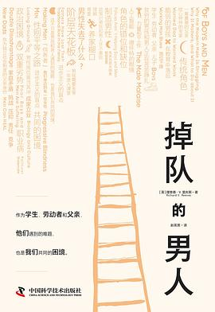

译
掉队的男人：当代男性的现实困境
内容简介
男孩和男人掉队了吗？从小学到大学，无论是成绩还是其他学业表现，男孩似乎越来越落后于女孩；面对经济结构变化，当力量型工作逐渐被人工智能取代，男性岗位首当其冲；当父亲不再是唯一养家糊口的人，他们面临着角色的错位和缺位。本书认为，这不只是男孩和男人遇到的难题，也是需要共同面对的困境：如果男孩可以晚一年入学，如果更多男性能够进入教育、护理等行业，如果父亲角色不再与“供养者”捆绑在一起，将有助于推动真正的性别平等。本书为《纽约时报》年度重要作品、《纽约客》《经济学人》年度图书、奥巴马夏季书单入选。
译后记
2023年6月的一个晚上，我换上短裤，正准备出门跑步，忽然收到田雷老师发来的消息：“英男，我这里有本书，我突然想到，你从某些方面可能是非常合适的译者人选，和法学没关系的书……。”当时我刚到上海不到两个月：白天是同济大学法学院的一个“青椒”，在论文撰写、项目申请与学院事务的炒勺里上下翻滚；晚上九点后是精武体育馆和鲁迅公园之间的一个体重超标的北方人，用不那么科学的方法在向标准的BMI指数亦步亦趋地靠近。
田老师口中“和法学没关系的书”一下子勾起了我的好奇心，但看到本书的英文书名“Of Boys and Men: Why the Modern Male Is Struggling, Why It Matters, and What to Do about It”后，好奇心却转变成了疑虑。这本书的内容主题显然具有鲜明的社会问题与公共政策指向，目标受众有专业人士、政策专家，也兼及对此议题感兴趣的普罗大众。这类著作我在美国访学期间读过一些，很喜欢。但实事求是地讲，相较于专业性较强的纯学术类著作，这种作品的阅读和翻译难度并不小：许多灵动地道的英语表达，我可能并不熟悉；许多社会现象与热点，我也没有设身处地的理解和感受；许多观点、论断及建议，我更分不清是务实的选择还是一厢情愿的畅想。这就难免导致自己的译文行文滞涩、态度冷漠、节奏失衡，而这正是翻译这类著作的大忌。
于是，我请田老师宽限一些时日，等我对全书内容有比较充分的把握后再做定夺。在接下来一周的时间里，我挑着读了一些自己感兴趣的章节。随着阅读的深入，先前的疑虑基本消失不见了。我发现这本书讨论的问题以及提出的建议不仅与我们当下的生活息息相关，甚至不乏让我“点头称是”的地方。我向来认为，性别话语是认识和分析社会时不可或缺的重要组成部分，在法学院中尤甚：就理论层面而言，女性主义法学（feminist jurisprudence）是后现代法律理论的重要思潮；从现实层面来说，我国高校法律院系中女生的数量与成就远超男生。此外，随着近年来的种种社会事件以及诸多女性主义著作的引进，社会性别意识不断高涨。这种影响已经在学生学位论文的选题中有所体现，我想日后肯定也会对司法实践以及法学教育有深远的影响。从这个角度来说，翻译这样一部讨论性别议题的社会政策作品，虽然是“出位之思”，但未尝不算未雨绸缪。
更何况，这也是磨炼自己中文和英语能力的好机会。虽然我已经翻译了不少英文著作，但它们都是严格意义上的“学院派”。这类著作有着自成一类的写作风格：用词力求朴实、结构力求简单、表达也多以简单句为主，尽量不涉及比喻、象征等修辞手法，也与俚语或流行语等基本无关。在这个意义上，我虽然读和译了一些英文作品，但一直没有机会“真刀真枪”地面对鲜活灵动、文采斐然的英文表达，更对兼顾学理论述和面向大众写作时所要拿捏的火候分寸缺乏体会。实际的翻译过程也印证了我的这个预判。但我还是希望本书呈现出的整体风格和对具体表达的处理，不会让熟悉我的朋友们觉得太过陌生和讶异。
最后，简单介绍一下本书及其作者。理查德·V. 里夫斯（Richard V. Reeves）在1969年7月出生于英国，本科毕业于英国古典大学的翘楚牛津大学沃德姆学院，博士毕业于英国“平板玻璃大学”的天花板华威大学。[1]他以政策研究见长，评论文章常见于《纽约时报》《卫报》《国家事务》《大西洋月刊》《华尔街日报》等重要媒体，在英国和美国的社会公共政策领域具有广泛影响力。
2010年前，里夫斯历任迪莫斯（Demos）智库负责人、非营利组织“工作基金会”（The Work Foundation）主席、英国《观察家报》（The Observer）社会版编辑、英国《卫报》经济记者和驻华盛顿记者，以及布莱尔担任首相时期任命的福利改革大臣弗兰克·菲尔德（Frank Field）的政策顾问。2010年英国大选后，保守党和自由民主党组成联合政府，自由民主党党魁尼克·克莱格（Nick Clegg）出任副首相，里夫斯在2010—2012年间作为特别顾问担任其战略总监（director of strategy），力主自由民主党转向中间派立场。后来的历史发展证明了这一判断的前瞻性。[2]2012年后，里夫斯前往美国，成为布鲁金斯学会高级研究员，担任“中产阶级未来倡议”（Future of the Middle Class Initiative）项目主任以及“儿童与家庭中心”（Center on Children and Families）的联合主任，主要关注中产阶级、不平等以及社会流动性等议题。
在本书之外，里夫斯还独自写作出版了三部作品：《约翰·斯图尔特·密尔：维多利亚时代的激进分子》（John Stuart Mill: Victorian Firebrand, 2007）、《拯救霍雷肖·阿尔杰：平等、机会与美国梦》（Saving Horatio Alger: Equality, Opportunity, and the American Dream, 2014）以及《梦想囤积者：美国中产阶级上层导致社会不平等的根源与出路》（Dream Hoarders: How the American Upper Middle Class Is Leaving Everyone Else in the Dust, Why That Is a Problem, and What to Do about It, 2017）。其中《梦想囤积者》一书被《经济学人》杂志遴选为2017年年度图书，被《观察家报》评选为2017年年度政治图书，并入围戈达德·里弗赛德·斯蒂芬·罗素社会正义图书奖（Goddard Riverside Stephan Russo Book Prize for Social Justice）短名单。里夫斯也由于他在社会阶层与不平等方面的研究，于同年被《政客》（Politico）杂志评选为美国50位顶级思想家之一。
本书作为里夫斯的最新力作，主要关注现代世界中男性——包括男孩与男人——所面临的困境及其根源，并尝试在此基础上提出相应的解决方案。本书在2022年10月甫一出版，即获得广泛关注，《卫报》《纽约时报》《大西洋月刊》《泰晤士报》《辛迪加项目》（Project Syndicate）等重要媒体与智库的图书栏目相继刊发了长篇书评，《经济学人》杂志和《纽约客》（New Yorker）杂志皆将之列为2022年度最佳图书。本书主体内容分为五个部分。前三个部分是有关男性所面临的现实困境的分析，这包括男孩与男人在教育制度、劳动力市场以及家庭生活中的危机（第一部分）、黑人男性以及身处经济阶梯底部的男性所面临的独特挑战（第二部分）以及导致性别差异的先天与后天因素（第三部分）。第四部分探讨了当下美国语境中的进步主义和保守主义立场如何将男性所面临的困境用作彼此攻讦的政治武器，而非为之提出切实可行的解决方案。最后的第五部分则针对教育、工作和家庭领域分别提出了帮助男性适应现代社会的政策与制度改革方案。
概括来说，里夫斯主张，男性问题并非男性自身的问题，也即男性所面临的问题并不是男性自身因素导致的，而是源于社会不断趋向性别平等的结构性变化。这种变化使得人们逐渐认为，传统的男性气质或男子气概对女性群体以及男性自身变得有害且危险。对此，进步主义者说，男子气概有害就意味着男性是有害的；保守主义者则说，让社会返回到性别平等之前的状态男子气概就不会有害。里夫斯认为这种争论于事无补。改善男性现状——改变男孩在学校成绩落后、男人在劳动力市场的失业以及丈夫或父亲在家庭中不断被边缘化的现状——就需要重塑男子气概，在肯定男性及其特质对于社会的独特价值的基础上，探究性别平等语境中男性的新形象。
不过，如许多评论者已经指出的，里夫斯在本书中并没有明确论述一种健康的、适宜于性别平等语境的男子气概究竟是何种模样。我们或许可以通过他在《纽约时报》的访谈中推荐的三部作品来思考这个问题。它们依次是经济学家凯瑟琳·埃丁（Kathryn Edin）、蒂姆·尼尔森（Tim Nelson）和安德鲁·切尔林（Andrew Cherlin）等人发表于《经济学视角杂志》（Journal of Economic Perspectives）的论文《劳工阶层男性的脆弱依恋》（“The Tenuous Attachments of Working Class Men”）、经济学家克劳迪娅·戈尔丁（Claudia Goldin）的著作《职业与家庭》（Career and Family, 2021）以及人类学家安娜·梅钦（Anna Machin）的著作《父亲的生活：制造现代父亲》（The Life of Dad: The Making of a Modern Father, 2018）。当然，我们也可以基于我国语境对此提出自己的看法。
每部译作推出，都是欣喜与惶恐的交织。感谢雅礼译丛主理人田雷老师不时帮助我发现自己的“另一面”，感谢刘海光老师与张阳老师细致专业的编校工作。感谢一路以来提携、帮助与支持我的诸位老师、朋友和读者，是你们让我的文字充满意义、斑斓多彩！
赵英男
癸卯年立秋
[1] 1963年英国高等教育委员会发布《罗宾斯报告》，要求让更多平民大众能够进入大学，一批新高校应运而生，英国高等教育由此进入大众化时代。这些新高校在建筑中广泛使用平板玻璃，与维多利亚风格的“红砖大学”（伯明翰大学、利兹大学、谢菲尔德大学等）和更古老的“古典大学”（牛津大学、金桥大学、杜伦大学等）形成鲜明对比。
[2] 自由民主党（The Liberal Democrats, LibDems）成立于1988年，由中间偏左翼立场的人士组成（这与里夫斯倡导的立场显然不同），是前自由党和从工党中分裂出来的社会民主党合并的产物。尼克·克莱格在2007年的党魁选举中获胜，又在2010年英国大选的电视辩论中表现出色，使得自由民主党支持率飙升。同年的大选中，没有政党取得国会过半数的议席，工党和保守党都拉拢自由民主党试图组成联合政府。但最终自由民主党与保守党的合作占据了半数以上的议席，于是保守党领袖大卫·卡梅伦任首相，尼克·克莱格任副首相。但在此后的政局中，自由民主党由于亲欧盟的立场以及种种因素，丧失了诸多议会席位，党魁尼克·克莱格最终在2015年选举后辞职以示负责。
田老师口中“和法学没关系的书”一下子勾起了我的好奇心，但看到本书的英文书名“Of Boys and Men: Why the Modern Male Is Struggling, Why It Matters, and What to Do about It”后，好奇心却转变成了疑虑。这本书的内容主题显然具有鲜明的社会问题与公共政策指向，目标受众有专业人士、政策专家，也兼及对此议题感兴趣的普罗大众。这类著作我在美国访学期间读过一些，很喜欢。但实事求是地讲，相较于专业性较强的纯学术类著作，这种作品的阅读和翻译难度并不小：许多灵动地道的英语表达，我可能并不熟悉；许多社会现象与热点，我也没有设身处地的理解和感受；许多观点、论断及建议，我更分不清是务实的选择还是一厢情愿的畅想。这就难免导致自己的译文行文滞涩、态度冷漠、节奏失衡，而这正是翻译这类著作的大忌。
于是，我请田老师宽限一些时日，等我对全书内容有比较充分的把握后再做定夺。在接下来一周的时间里，我挑着读了一些自己感兴趣的章节。随着阅读的深入，先前的疑虑基本消失不见了。我发现这本书讨论的问题以及提出的建议不仅与我们当下的生活息息相关，甚至不乏让我“点头称是”的地方。我向来认为，性别话语是认识和分析社会时不可或缺的重要组成部分，在法学院中尤甚：就理论层面而言，女性主义法学（feminist jurisprudence）是后现代法律理论的重要思潮；从现实层面来说，我国高校法律院系中女生的数量与成就远超男生。此外，随着近年来的种种社会事件以及诸多女性主义著作的引进，社会性别意识不断高涨。这种影响已经在学生学位论文的选题中有所体现，我想日后肯定也会对司法实践以及法学教育有深远的影响。从这个角度来说，翻译这样一部讨论性别议题的社会政策作品，虽然是“出位之思”，但未尝不算未雨绸缪。
更何况，这也是磨炼自己中文和英语能力的好机会。虽然我已经翻译了不少英文著作，但它们都是严格意义上的“学院派”。这类著作有着自成一类的写作风格：用词力求朴实、结构力求简单、表达也多以简单句为主，尽量不涉及比喻、象征等修辞手法，也与俚语或流行语等基本无关。在这个意义上，我虽然读和译了一些英文作品，但一直没有机会“真刀真枪”地面对鲜活灵动、文采斐然的英文表达，更对兼顾学理论述和面向大众写作时所要拿捏的火候分寸缺乏体会。实际的翻译过程也印证了我的这个预判。但我还是希望本书呈现出的整体风格和对具体表达的处理，不会让熟悉我的朋友们觉得太过陌生和讶异。
最后，简单介绍一下本书及其作者。理查德·V. 里夫斯（Richard V. Reeves）在1969年7月出生于英国，本科毕业于英国古典大学的翘楚牛津大学沃德姆学院，博士毕业于英国“平板玻璃大学”的天花板华威大学。[1]他以政策研究见长，评论文章常见于《纽约时报》《卫报》《国家事务》《大西洋月刊》《华尔街日报》等重要媒体，在英国和美国的社会公共政策领域具有广泛影响力。
2010年前，里夫斯历任迪莫斯（Demos）智库负责人、非营利组织“工作基金会”（The Work Foundation）主席、英国《观察家报》（The Observer）社会版编辑、英国《卫报》经济记者和驻华盛顿记者，以及布莱尔担任首相时期任命的福利改革大臣弗兰克·菲尔德（Frank Field）的政策顾问。2010年英国大选后，保守党和自由民主党组成联合政府，自由民主党党魁尼克·克莱格（Nick Clegg）出任副首相，里夫斯在2010—2012年间作为特别顾问担任其战略总监（director of strategy），力主自由民主党转向中间派立场。后来的历史发展证明了这一判断的前瞻性。[2]2012年后，里夫斯前往美国，成为布鲁金斯学会高级研究员，担任“中产阶级未来倡议”（Future of the Middle Class Initiative）项目主任以及“儿童与家庭中心”（Center on Children and Families）的联合主任，主要关注中产阶级、不平等以及社会流动性等议题。
在本书之外，里夫斯还独自写作出版了三部作品：《约翰·斯图尔特·密尔：维多利亚时代的激进分子》（John Stuart Mill: Victorian Firebrand, 2007）、《拯救霍雷肖·阿尔杰：平等、机会与美国梦》（Saving Horatio Alger: Equality, Opportunity, and the American Dream, 2014）以及《梦想囤积者：美国中产阶级上层导致社会不平等的根源与出路》（Dream Hoarders: How the American Upper Middle Class Is Leaving Everyone Else in the Dust, Why That Is a Problem, and What to Do about It, 2017）。其中《梦想囤积者》一书被《经济学人》杂志遴选为2017年年度图书，被《观察家报》评选为2017年年度政治图书，并入围戈达德·里弗赛德·斯蒂芬·罗素社会正义图书奖（Goddard Riverside Stephan Russo Book Prize for Social Justice）短名单。里夫斯也由于他在社会阶层与不平等方面的研究，于同年被《政客》（Politico）杂志评选为美国50位顶级思想家之一。
本书作为里夫斯的最新力作，主要关注现代世界中男性——包括男孩与男人——所面临的困境及其根源，并尝试在此基础上提出相应的解决方案。本书在2022年10月甫一出版，即获得广泛关注，《卫报》《纽约时报》《大西洋月刊》《泰晤士报》《辛迪加项目》（Project Syndicate）等重要媒体与智库的图书栏目相继刊发了长篇书评，《经济学人》杂志和《纽约客》（New Yorker）杂志皆将之列为2022年度最佳图书。本书主体内容分为五个部分。前三个部分是有关男性所面临的现实困境的分析，这包括男孩与男人在教育制度、劳动力市场以及家庭生活中的危机（第一部分）、黑人男性以及身处经济阶梯底部的男性所面临的独特挑战（第二部分）以及导致性别差异的先天与后天因素（第三部分）。第四部分探讨了当下美国语境中的进步主义和保守主义立场如何将男性所面临的困境用作彼此攻讦的政治武器，而非为之提出切实可行的解决方案。最后的第五部分则针对教育、工作和家庭领域分别提出了帮助男性适应现代社会的政策与制度改革方案。
概括来说，里夫斯主张，男性问题并非男性自身的问题，也即男性所面临的问题并不是男性自身因素导致的，而是源于社会不断趋向性别平等的结构性变化。这种变化使得人们逐渐认为，传统的男性气质或男子气概对女性群体以及男性自身变得有害且危险。对此，进步主义者说，男子气概有害就意味着男性是有害的；保守主义者则说，让社会返回到性别平等之前的状态男子气概就不会有害。里夫斯认为这种争论于事无补。改善男性现状——改变男孩在学校成绩落后、男人在劳动力市场的失业以及丈夫或父亲在家庭中不断被边缘化的现状——就需要重塑男子气概，在肯定男性及其特质对于社会的独特价值的基础上，探究性别平等语境中男性的新形象。
不过，如许多评论者已经指出的，里夫斯在本书中并没有明确论述一种健康的、适宜于性别平等语境的男子气概究竟是何种模样。我们或许可以通过他在《纽约时报》的访谈中推荐的三部作品来思考这个问题。它们依次是经济学家凯瑟琳·埃丁（Kathryn Edin）、蒂姆·尼尔森（Tim Nelson）和安德鲁·切尔林（Andrew Cherlin）等人发表于《经济学视角杂志》（Journal of Economic Perspectives）的论文《劳工阶层男性的脆弱依恋》（“The Tenuous Attachments of Working Class Men”）、经济学家克劳迪娅·戈尔丁（Claudia Goldin）的著作《职业与家庭》（Career and Family, 2021）以及人类学家安娜·梅钦（Anna Machin）的著作《父亲的生活：制造现代父亲》（The Life of Dad: The Making of a Modern Father, 2018）。当然，我们也可以基于我国语境对此提出自己的看法。
每部译作推出，都是欣喜与惶恐的交织。感谢雅礼译丛主理人田雷老师不时帮助我发现自己的“另一面”，感谢刘海光老师与张阳老师细致专业的编校工作。感谢一路以来提携、帮助与支持我的诸位老师、朋友和读者，是你们让我的文字充满意义、斑斓多彩！
赵英男
癸卯年立秋
[1] 1963年英国高等教育委员会发布《罗宾斯报告》，要求让更多平民大众能够进入大学，一批新高校应运而生，英国高等教育由此进入大众化时代。这些新高校在建筑中广泛使用平板玻璃，与维多利亚风格的“红砖大学”（伯明翰大学、利兹大学、谢菲尔德大学等）和更古老的“古典大学”（牛津大学、金桥大学、杜伦大学等）形成鲜明对比。
[2] 自由民主党（The Liberal Democrats, LibDems）成立于1988年，由中间偏左翼立场的人士组成（这与里夫斯倡导的立场显然不同），是前自由党和从工党中分裂出来的社会民主党合并的产物。尼克·克莱格在2007年的党魁选举中获胜，又在2010年英国大选的电视辩论中表现出色，使得自由民主党支持率飙升。同年的大选中，没有政党取得国会过半数的议席，工党和保守党都拉拢自由民主党试图组成联合政府。但最终自由民主党与保守党的合作占据了半数以上的议席，于是保守党领袖大卫·卡梅伦任首相，尼克·克莱格任副首相。但在此后的政局中，自由民主党由于亲欧盟的立场以及种种因素，丧失了诸多议会席位，党魁尼克·克莱格最终在2015年选举后辞职以示负责。
译后记全文，提取自作者译稿。
评论